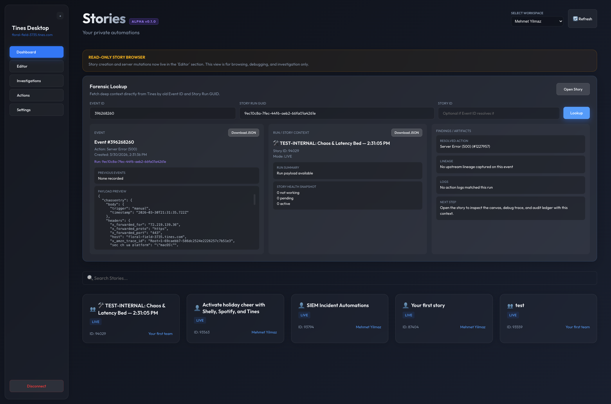
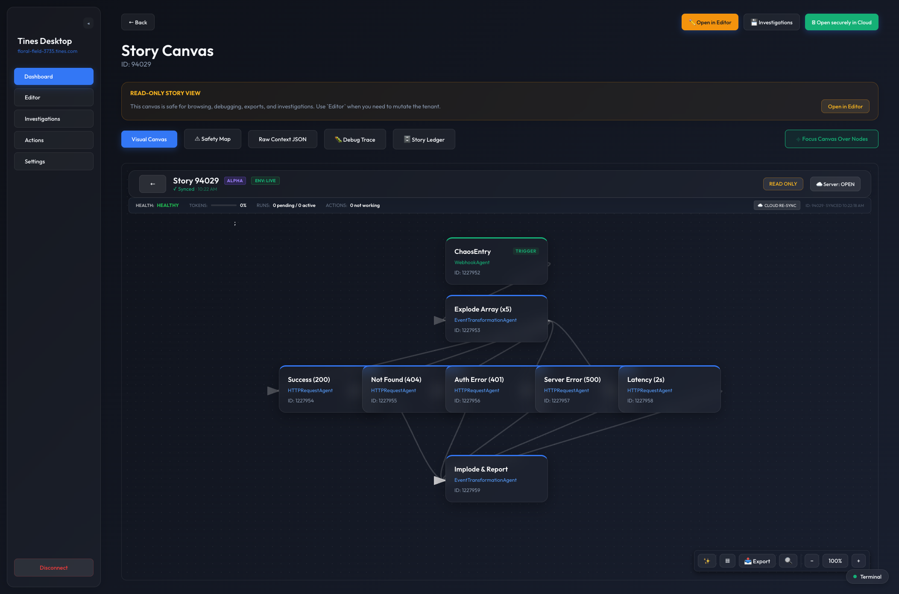
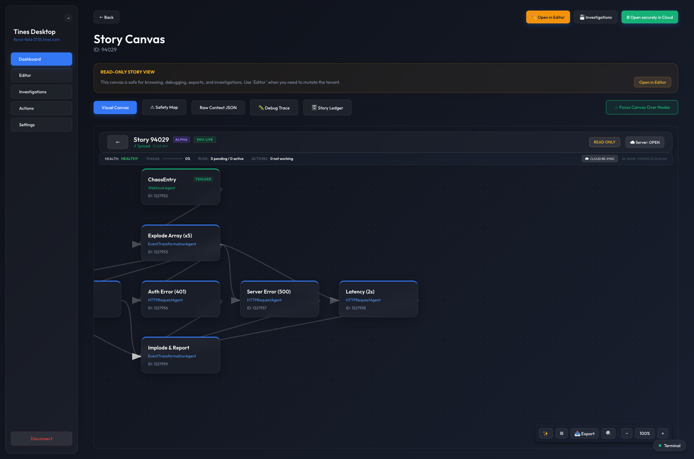
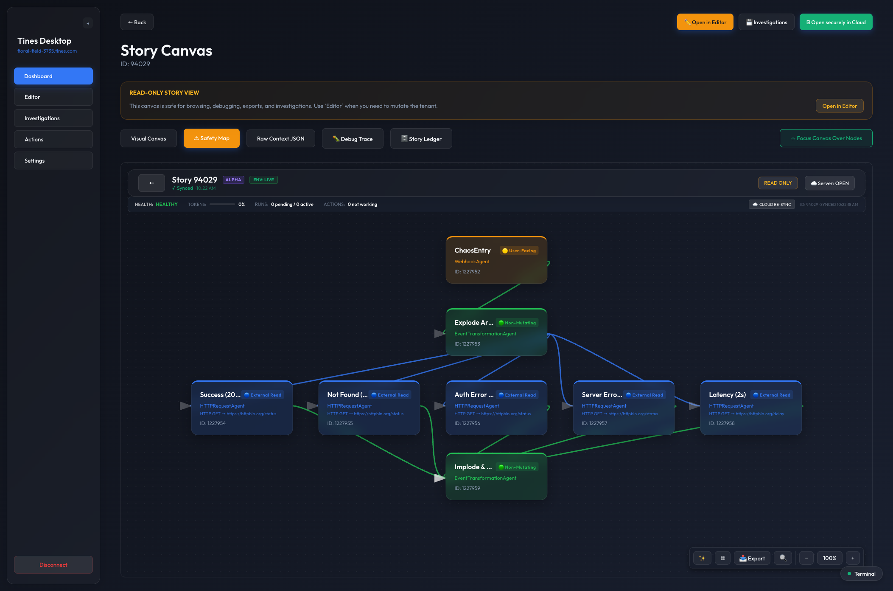
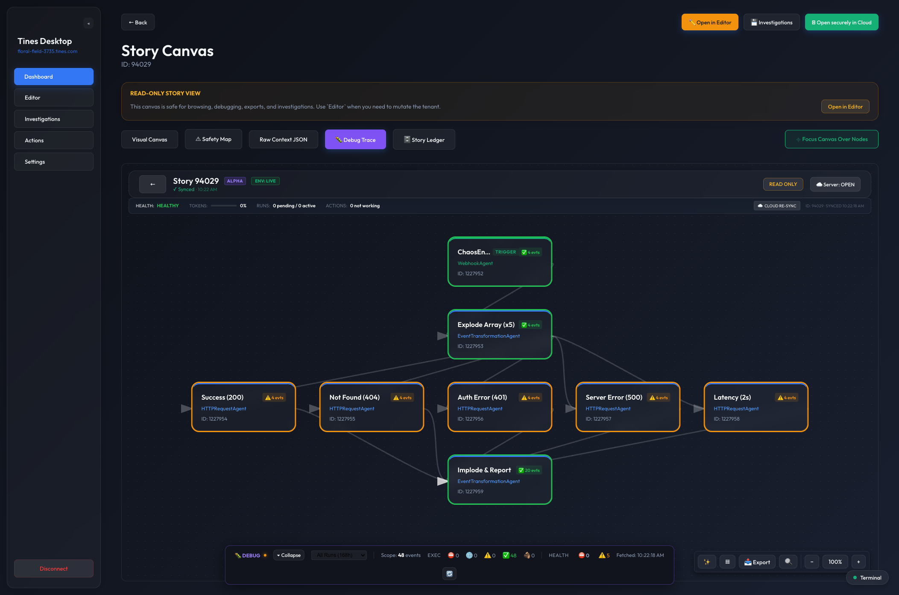

Forensic lookup
Translate old incident references into story, run, action, and downloadable artifact context without manual Tines UI hunting.
Tines Desktop is an unofficial Electron app for exploring stories in a safer read-only flow, tracing execution visually, looking up old incidents by Event ID or Story Run GUID, and saving local investigations with screenshots and evidence.

Tines is powerful, but day-to-day operational work often needs a different shape than the browser alone: safe inspection, focused debugging, incident-driven lookup, and a way to preserve findings locally. Tines Desktop aims to make that workflow faster and easier to reason about.
Open stories in a browse-first canvas with local-only layout, zoom, search, and export tools.
Start from an Event ID or Story Run GUID and resolve story, action, run, and artifact context.
Inspect execution history and supported health signals across the story graph.
Review blast radius, risky nodes, and where bad data may be re-emitted or propagated downstream.
Save local investigative sessions with findings, screenshots, run context, and evidence artifacts.
Keep routine investigation safe while isolating mutation-capable behavior in a clearly marked editor surface.
These are some of the strongest workflows in the current alpha. The visual language is intentionally bold and operational: readable graphs, explicit risk cues, and a clear separation between inspection and editing.

Translate old incident references into story, run, action, and downloadable artifact context without manual Tines UI hunting.

Use local auto-layout to make dense stories readable before debugging, exporting, or handoff.

Reason about operational risk, downstream impact, and where problematic inputs could turn into external side effects.

Visualize run-scoped and all-runs execution state while keeping supported health signals visible on the graph.
Tines Desktop is an open source side project and is not an official Tines product. It is not supported by Tines. You should treat it as an alpha-quality companion app.
The editor surface exists, but it is not the strongest part of the product today. The recommended workflow is still the read-only investigation path unless you explicitly want to test editor behavior.
Saved profiles use Electron safeStorage when the host OS supports it,
which is the normal expectation on macOS and Windows. Edge-case environments such
as stripped-down Linux systems are where that assumption is weaker.
The app is good at reconstructing execution and supported health signals, but it does not always get the exact action-log detail shown in the Tines web UI. Use the desktop debugger as a strong operational view, not perfect browser parity.
To work on Tines Desktop locally, you currently need the sibling
tines-sdk-js repository next to this one because the app depends on it
through a local file reference.
tines-sdk/ tines-desktop/ tines-sdk-js/ cd tines-desktop npm install npm run start
Looking for a deeper walkthrough? Start with the full user guide.